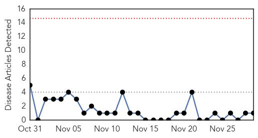
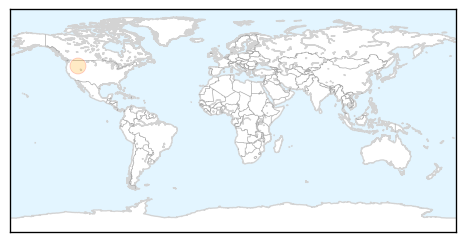
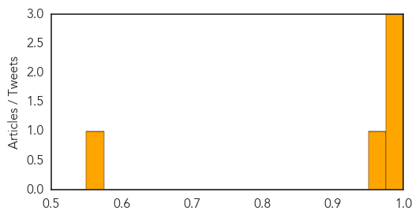

Meningitis
30-Day Web Trend
0 alerts, 0 warnings

30-Day Twitter Trend
2 alerts, 0 warnings

Article Locations
Article Confidences

Top Articles:
Top Tweets:
-
No tweets found for Nov 29, 2014
Cholera
30-Day Web Trend
0 alerts, 0 warnings
30-Day Twitter Trend
1 alerts, 0 warnings
Article Locations

Article Confidences
Top Articles:
Top Tweets:
-
No tweets found for Nov 29, 2014